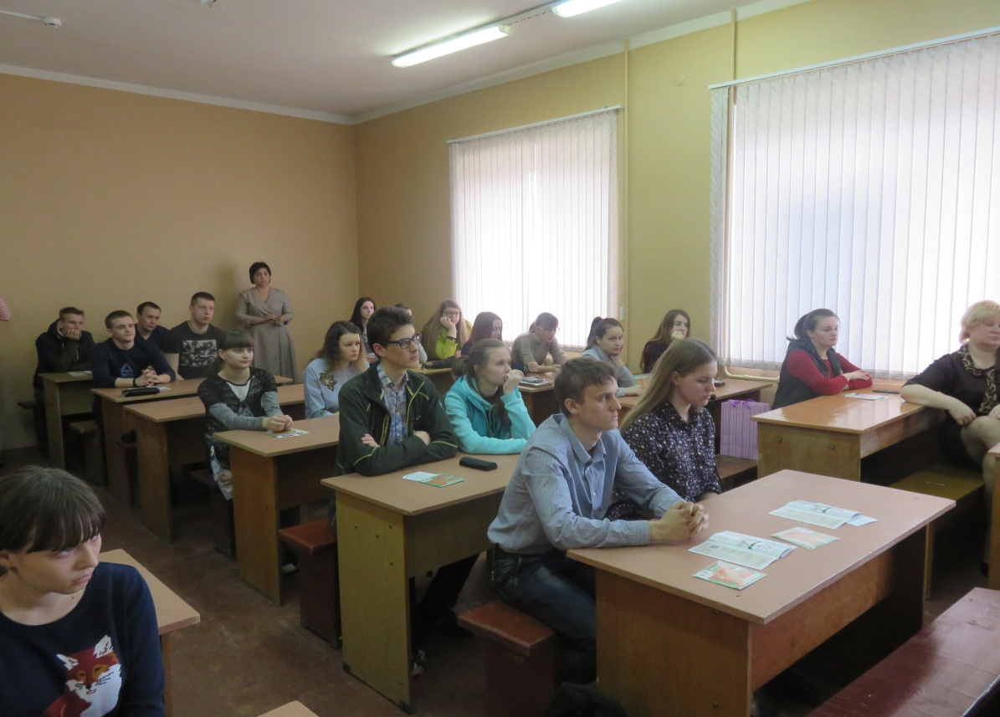
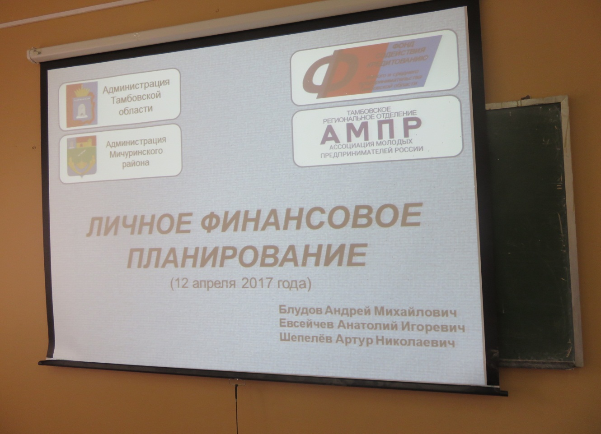
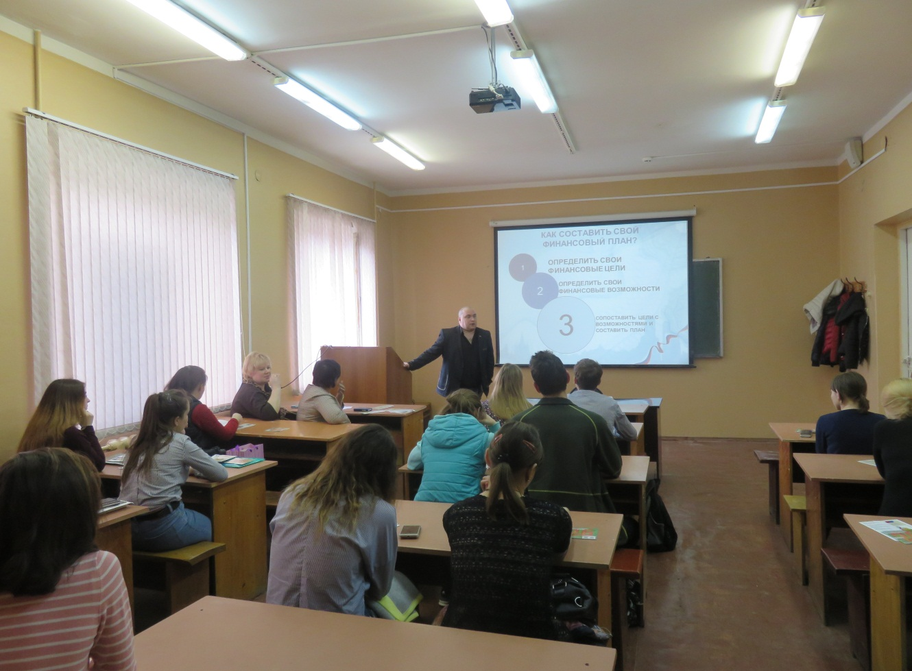

Дни финансовой грамотности в Мичуринском государственном аграрном университете
12 апреля 2017 года представители АО МК «Фонд содействия кредитованию малого и среднего предпринимательства Тамбовской области» (далее - Фонд) провели мероприятие «Дни финансовой грамотности» в Мичуринском государственном аграрном университете.
В данном мероприятии представители Фонда акцентировали внимание студентов на том, что финансовая грамотность является одним из главных условий повышения уровня жизни как граждан, так и всей страны. Учитывая усложнение системы и появление разнообразных услуг, граждане должны уметь принимать взвешенные решения по их использованию, получать полезную информацию в области денежных отношений, уметь планировать бюджет и т.п.
Пропаганда и популяризация предпринимательской деятельности, а также бизнес-образование молодёжи является одним из приоритетных направлений деятельности Фонда.


